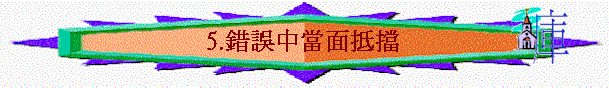

第五課 錯誤中當面抵擋
〔二：１１－２１〕
本課要旨：保羅既為使徒職分辯論完畢，便開始論及福音的真理，就是因信稱義的真理。保羅又引述彼得訪問安提阿教會一事，從這事可以看到福音真理是凌駕於任何一個領袖之上的。此段亦開始帶出「十字架」這寶貴的信息。
１．彼得是在何時到安提阿的﹖〔二：１１〕（註一）
２．彼得不與外邦人吃飯，在人看來似乎是件極小的事，卻引來被保羅當面的責備。究竟彼得的錯誤在那裡﹖為何不與外邦人吃飯的行為會與福音真理拉上關係呢﹖〔二：１１－１４〕
３．彼得為何會犯錯﹖他的錯誤給我們甚麼鑑戒呢﹖〔二：１３〕
４．試想若保羅不當面責備他，會有甚麼嚴重後果﹖〔二：１４〕
ａ．對猶太信徒：
ｂ．對外邦信徒：
ｃ．對教會的影響：
５．請填上裝假的兩個人。他們分別代表著兩間重要的教會。〔二：１１－１３〕
ａˍˍˍˍˍˍ(耶京代表)
ｂ. ˍˍˍˍˍˍ(安提阿代表)
６．試假設你自己是當中被責備的一位領袖。你會有何感受﹖這對我們有何提醒﹖
７．在這吃飯的事件中，有誰跟隨彼得退去與外邦人隔開﹖保羅責備彼得「勉強外邦人隨猶太人」中被勉強的「外邦人」又是誰﹖〔二：１４〕
８．「稱義」一詞有何含意﹖〔二：１６〕
９．在〔二：１４〕所提及的福音真理正是〔二：１５－１６〕所論及「因信稱義」的真理。〔二：１５－１６〕（註二）
ａ．「因信稱義」與「行律法稱義」有何分別﹖
ｂ．兩種不同的「稱義」的結果有何分別﹖
10．猶太人與外邦人在稱義的方法上，究竟有沒有分別呢﹖〔二：１５－１６；羅三：３１〕
11．〔二：１６〕首次提及「律法」一詞。「律法」是甚麼﹖猶太人是在甚麼時開始行律法﹖
12．「行律法稱義」簡單來說是因行為而稱義。我們心裡面對自己、對別人、或在神面前，有時候會否含有因自己的好行為而產生一種驕傲的態度呢﹖請作自我的檢討。
13．「我們．．．卻仍舊是罪人」與「難道基督是叫人犯罪麼」何解﹖注意此句是反問語。〔二：１７〕
14．保羅拆毀了甚麼﹖又建造了甚麼﹖〔二：１８〕
15．加拉太書中分別有四個十字架，次序如下：
* １ * 我（舊我）被釘死〔二：２０〕*
* ２ * 基督 被釘死〔三：１ ] *
* ３ * 肉體 被釘死〔五：２４〕*
* ４ * 世界 被釘死〔六：１４〕*
第一個十字架就是說出：舊我與基督同釘十架的事實。
16．請將〔二：１９〕頭兩句比對〔二：２０〕頭一句；再將〔二：１９下〕比對〔二：２０下〕；來看出十架有那兩方面的功效：
ａ．消極上的功效：
ｂ．積極上的功效：
17．保羅寫信時仍然是活著，主釘十字架又是在數十年前的事，那麼他為何說自己已與主同釘十字架呢﹖我們又怎能同時既是死了又是活著的呢﹖〔二：２０；參羅六：６－１１〕
18．基督怎樣在我們裡面活著﹖〔二：２０；羅八：２－４〕
19．在〔二：１９－２０〕中兩次提及「死」，這個「死」是客觀的事實，還是主觀的感受呢﹖我們又如何支取這個屬靈的應許呢﹖（註三）
20．「祂是愛我，為我捨己。」請一同默想主犧牲的大愛。〔二：２０；一：４〕
21．請將〔二：１６〕與二：２１〕同讀，研究〔二：２１〕是如何支持著〔二：１６〕有關「義」的論點。（註四）
第五課附註：
註一：此處所指是敘利亞的首都安提阿〔徒十一：２６〕，於Ｂ．Ｃ．３０１年建成；非指彼西底的安提阿〔徒十三：１４〕。
註二：「不是外邦的罪人」意思指猶太人是神所揀選的，他們有優等的民族觀念，認為自己不是像外邦的那些罪人一樣的。
註三：「我已經．．．釘十字架」NASB譯" I have been crucified "，意即舊人已被釘在十字架上了。
註四：〔二：２１〕所說的「義」" righteousness " 原文的字根與〔二：１５－１７〕的「稱義」" justified " 是相同的。
參考答案
第五課：錯誤中當面抵擋
１．聖經並無提及，大概是在耶路撒冷大會之後。
２．猶太人素有不與外邦人同吃之習慣〔徒七章〕，但那時彼得是早已認識到神的救恩臨到外邦人（自己也經歷過，參〔徒十、十一、十五章〕），是不在乎儀文規條。而且他身為使徒，他所作的事影響很大。
３．因他懼怕奉割禮的人，而失去見證。可見一個屬靈領袖如彼得，雖然身經百戰，也當常常倚靠主儆醒行事。
４．ａ．猶太信徒會以為是一件平常的事情（參第２題答案），卻以為他是贊同此行動。
ｂ．外邦信徒會想到他們與猶太信徒的分別只是在於割禮與律法上，但他此行動會使他們懷疑信徒們在主裡面是否有等級之分，或自己有何不完全的地方，甚至懷疑稱義是否單因著信。
ｃ．對教會有廣泛的影響，或是分裂，或是影響其他外邦的教會走回律法主義的道路中。
５．1. 彼得；2. 巴拿巴。
６．領袖若有犯錯而被指責，應像彼得那樣謙卑下來，接受勸告、順服真理；因信徒在主裡面是平等的。從〔彼後三：１５〕對保羅的稱讚，可見他沒有把此事當作私人的恩怨而放在心上。
７．巴拿巴和其餘的猶太人。從〔二：１２〕看來，當時分為兩群人，一群是猶太信徒，一群是外邦信徒，應沒有外邦人跟隨彼得退去往猶太信徒的一群中，因他們本身就是來受割禮的人，必被排擠。所以這裡所指被勉強的「外邦人」，應指巴拿巴（生長在居比路）和那些生長於外邦地方的猶太信徒，因他們一直是與外邦信徒一同吃飯、生活的，並不像生在猶太地的猶太信徒。
８．包括罪得赦免、宣佈無罪、正式被算為義人的意思。
９．ａ．行律法即是靠行為去達至稱義。是以人為主，是神幫助人，是外表行為上的改變。而因信稱義，則是單靠主耶穌基督而稱義，是人靠神，人只是接受恩典的器皿，聖靈卻在人心裡面所作的改變。
ｂ．就是優等如猶太人，卻也不能因行律法在神面前稱義，因〔羅三：２０〕證明此方法實是不通的（因人有罪）。而因信而得的「義」與行律法而得的「義」不同，前者是神的「義」，由耶穌基督而來；後者則是只人的「義」，與前者相距太遠〔腓三：９〕。
10．沒有。因信耶穌基督稱義，並不分猶太人、外邦人。
11．律法是神於西乃山上頒佈的，內容包括誡命、律例和典章等。至於律法的作用，請參第六課的研究。
12．我們也有很多時墮入此種自義的態度中，須常警惕。
13．全句大意是：「我們生來的猶太人若靠著主耶穌稱義，而竟然在神面前卻仍然罪未得解決，需要守割禮及律法，卻仍然是個罪人；那麼難道主耶穌是不能夠叫人完全稱義，反而叫人犯罪嗎﹖」
14．「拆毀」指憑律法稱義的途徑。「重新建造」指若他再重新宣揚；贊同憑律法稱義之事。
16．ａ．「向律法死」相對「我已經與基督同釘十字架」：表示這個人已經死了，脫離了律法及其束縛；對律法來看，我已經死了，因主耶穌已代死。
ｂ．「向神活」相對「我因信神兒子而活」：表示這個人因著基督被神稱義，所以能夠坦然在神面前活著。
17．雖然保羅肉身並無與主同釘死，但這裡說明的乃是主代死的工作，祂的死也成為我們的死，「舊我」已與主同釘在十架上死了。神看我們是已經死了，我們也受了罪的刑罰，罪便得了解決。而如今活著的目標，乃是「信神兒子而活」，即是為主而活，憑主而活，過一種新的生活。因此既是死又是活。
18．是藉著聖靈住在我們裡面，重生了我們，使我們得新生命，有基督的生命。
19．基督為我們釘死是一件客觀的事實。因主代死的工作已經完成，贖價已經付上了。但人要去支取這福氣，需要透過信心來接上。「因信神兒子而活」這種信心，不像「得救的信心」是一次過的信心，乃是常常運用的信心，信靠基督，「看」自己是死的，而為主而活〔羅六：８〕。
20．我們應該感謝祂！常受祂的大愛所感動，以致活得有力量。
21．「義」不是由行律法而得，乃是由信基督而得。若「義」是由行律法而得，基督代死的功用便是百廢了！